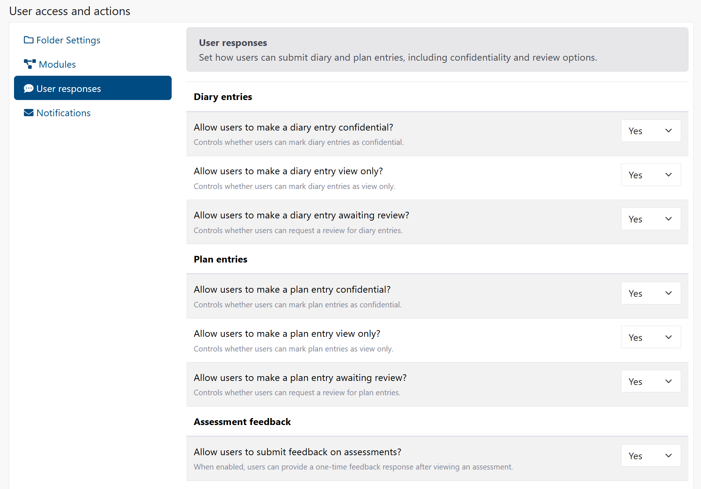
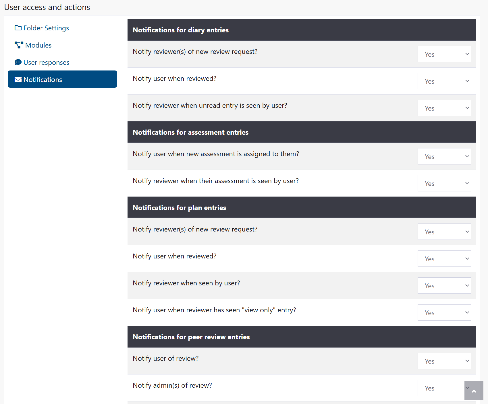
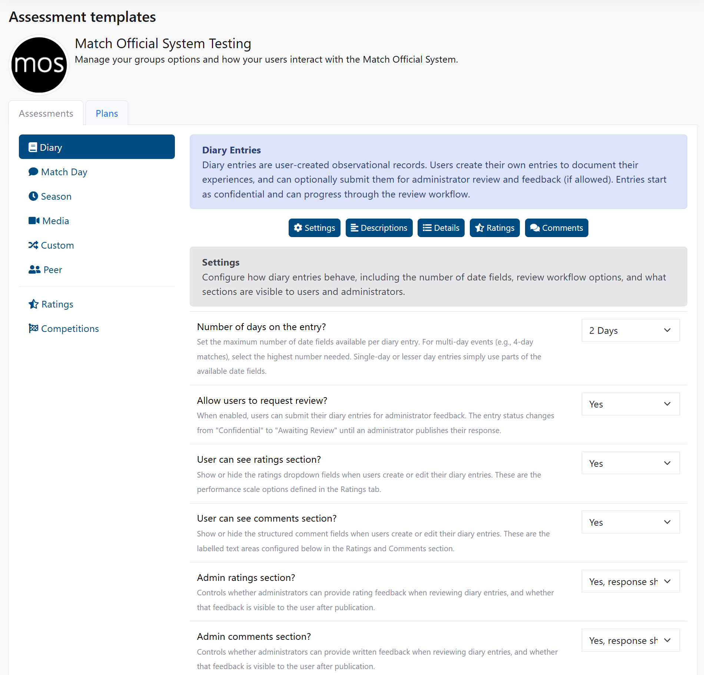
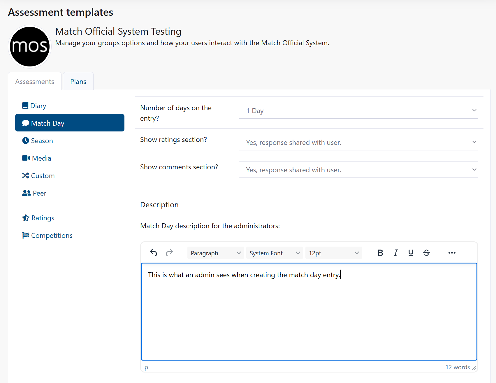
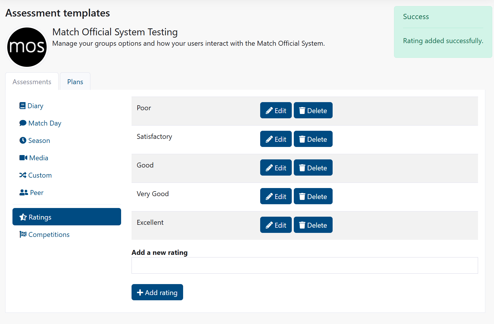
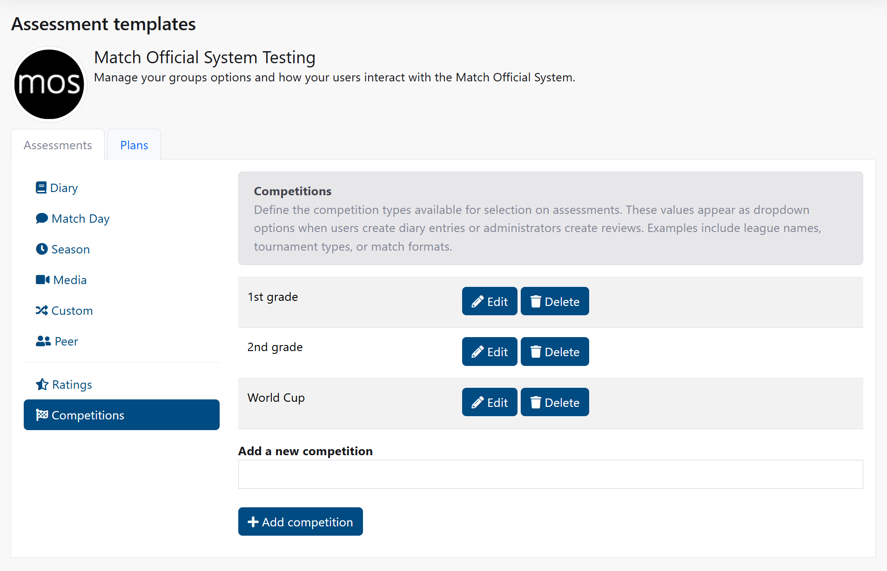

Getting Started: New Organisations
Access Level
Owner required
Welcome to the Match Official System. This guide walks you through the essential setup steps to get your organisation operational.
What You Need to Do First
When you first log in as an administrator, you need to configure your group's settings and assessment templates. This typically takes 30-45 minutes and only needs to be done once or as you change your templates to enrich data over site.
Step-by-Step Setup
Step 1: Access Group Settings
- From the main menu, click Admin
- Click Group Settings
- You see the Group Settings page with several tabs on the left sidebar
The first section shows your License Information - this tells you how many users and subgroups your organisation is entitled to.
Step 2: Set Up Your Organisation Details

Configure Calendar Start
- Click the Calendar Start tab
- Select the month when your calendar year begins (e.g., July for a football season starting in July)
- This month becomes the first month throughout the system
Configure Location
- Click the Location tab
- Enter your group's primary location or city
- Enter your postcode
- Click Save location
Your location is used for weather information and location-based features.
Step 3: Configure User Access
These settings determine which folders and features are available to users.
Enable Folder Access
- Click the Folder Settings tab
- Select Yes for:
- User folder - Allows each user to have a personal file storage area
- Subgroups folder - Allows subgroups to have shared file storage areas
- Click Save user settings
Configure User Response Options

- Click the User responses tab
- Decide which features users can access:
- Confidential entries (private entries not visible to others)
- View only entries (shareable but not editable by others)
- Review requests (ability to request feedback)
- Check both Diary and Plan sections
- Click Save user settings
Set Up Notifications

- Click the Notifications tab
- For each notification type (Diary, Assessment, Plan, Peer), select Yes or No to enable email alerts
- Start with Yes for most notifications to keep users informed
- Click Save user settings
Step 4: Create Subgroups (Optional)
If your organisation has teams, departments, or divisions, create subgroups.
- Click the Subgroups tab
- For each subgroup, enter the name and click Add subgroup
- Common subgroups:
- Team 1, Team 2, Team 3 (for sports organisations)
- Department A, Department B (for administrative divisions)
- Region North, Region South (for geographic divisions)
Each subgroup gets its own folder and can have its own members.
Step 5: Add Quick Links (Optional)
Quick links appear on the home page and help users access important resources.
- Click the Quick Links tab
- Add links for:
- Your organisation's website
- Training resources
- Policies and procedures
- Contact information
- Select an icon for each link
- Click Add quick link
Step 6: Set Up User Registration (Optional)
If you want new users to register themselves instead of creating accounts manually:
- Click the User registration tab
- Select Yes
- Share the provided registration URL with potential users
- New users who register will need to be assigned to subgroups by an administrator
Step 7: Configure Assessment Templates
Now that the basic group settings are complete, configure how assessments will work.
Important: Plan Your Templates Carefully
Before you start, plan your templates carefully. Each time you modify a template, the previous version is archived to preserve historical data. Frequent changes can create data inconsistency. Design once, then only modify if absolutely necessary.
- From the Admin menu, click Group Settings again
- Click the Assessment templates tab
- You see two main sections: Assessments and Plans
Diary Template
Your users will likely create diary entries most frequently. Configure this first:

- Click Diary in the Assessments section
- Set Number of days to 3 (most commonly used)
- Enable Allow users to request review? - Set to Yes
- Enable User can see ratings section? - Set to Yes
- Enable User can see comments section? - Set to Yes
- For admin visibility, select:
- Admin ratings: Yes, response shared with user
- Admin comments: Yes, response shared with user
- Enter a User Description explaining how to complete diary entries
- Enter an Admin Description with guidance for reviewing
- For the 6 detail fields, enter custom fields relevant to your organisation:
- Detail 1: "Key decisions"
- Detail 2: "Performance observations"
- Detail 3: "Areas for improvement"
- Leave Details 4-6 blank if you don't need them
- Remember: Diary entries always include three hardcoded fields: Team A, Team B, and Venue
- Click Save assessment design
Match Day Template
Configure assessments for specific match/event days:

- Click Match Day
- Set Number of days to 1
- Select Show ratings section? - Choose appropriate visibility
- Select Show comments section? - Choose appropriate visibility
- Add 6 custom detail fields:
- Detail 1: "In-game decisions"
- Detail 2: "Communication"
- Detail 3: "Positioning"
- Detail 4: "Positioning"
- Detail 5: "Player management"
- Detail 6: "Overall performance"
- Remember: Match day entries always include: Team A, Team B, and Venue
- Click Save assessment design
Other Assessment Types
Configure the remaining types based on your needs:
- Season: For longer-term reviews (usually just detail fields, no ratings/comments)
- Media: For video/image assessments
- Custom: For organisation-specific assessments
- Peer: For peer-to-peer reviews between officials
For each: 1. Click the type name 2. Add detail fields relevant to your organisation 3. Configure ratings and comments visibility 4. Click Save assessment design
Step 8: Set Up Rating Scales

- Still in Assessment Templates, click the Ratings tab
- Add rating options users will see. For example:
- "Excellent - Far exceeds expectations"
- "Good - Meets expectations"
- "Needs improvement - Below expectations"
- "Not assessed"
- For each, click Add rating
These ratings appear in all assessment forms.
Step 9: Create Competitions (Optional)

If you want to track specific competitions or events:
- Click the Competitions tab
- Enter competition or event names
- Click Add competition
Examples: - "Premier League" - "Cup Competition" - "Tournament" - "Friendly"
Step 10: Customise Ratings and Comments (Advanced)
For more advanced configuration, you can customise rating and comment fields per assessment type:
- Go to each assessment type (Diary, Match Day, etc.)
- Scroll to see rating options (Rating 1 through Rating 20)
- Enter custom rating labels specific to your organisation
- Below that, enter comment field labels (Comment 1 through Comment 10)
- Click Save assessment design
Common Setup Examples
For a Football Association
Group Settings - Calendar Start: January - Location: headquarters city - User folder: Yes - Subgroups folder: Yes - Create subgroups: Referees, Assistants, Video Assistants - Notifications: enable Match/Assessment and Review alerts as needed
Assessment Templates - Diary: Number of days = 1; full ratings and comments enabled; allow review requests - Match Day: Number of days = 1; - Peer: Number of days = 1; peer ratings enabled (confidential option available) - Media: enable for video/image attachments where required
Detail fields (examples) - Decision making - Positioning - Communication - Game awareness
Ratings - Excellent — Exceeds expectations - Good — Meets expectations - Satisfactory — Meets basic expectations - Needs improvement — Below expectations
Suggested defaults
1. Diary: 1 day; allow review requests; user and admin ratings + comments visible
2. Match Day: 1 day; include hardcoded fields; media uploads optional
3. Peer: peer ratings enabled; confidentiality option on request
For a Cricket Association
Group Settings - Calendar Start: April - Location: county or club headquarters - User folder: Yes - Subgroups folder: Yes - Create subgroups: Umpires, Scorers, Coaches, Squad panels - Notifications: enable Match/Assessment and Review alerts
Assessment Templates - Diary: Number of days = 2; ratings and comments enabled - Match Day: Number of days = 1; - Peer: Number of days = 2; peer feedback enabled - Media: for video/image reviews and timestamped comments - Season: end‑of‑season summary reviews - Custom: fitness and technical skills assessments
Detail fields (examples) - Decision making - Positioning & movement - Communication - Playing conditions - Match management - Teamwork - Use of technology (e.g., DRS/video)
Ratings - Excellent — Far exceeds expectations - Good — Meets expectations - Satisfactory — Acceptable standard - Needs improvement — Below expectations - Not assessed
Suggested defaults
1. Diary: 1 day; allow review requests; user/admin ratings and comments visible
2. Match Day: 1 day; include the three hardcoded fields; enable media uploads and time‑coded comments
3. Peer: peer ratings enabled with confidential option
4. Media: allow reviewers to timestamp clips and leave time‑coded comments
For a Sports Development Programme
Group Settings - Calendar Start: September - Location: facility location - User folder: Yes - Subgroups folder: Yes - Create subgroups: Beginner, Intermediate, Advanced - Notifications: enable training and progress alerts
Assessment Templates - Diary: Number of days = 2; comments only for reflective learning - Custom: development progress tracking - Season: end‑of‑season reviews
Detail fields (examples) - Technical skills - Fitness level - Tactical understanding - Teamwork - Development goals
Suggested defaults
1. Diary: 2 days; comments only for reflection and coaching notes
2. Custom: track progression against learning outcomes
3. Season: summary focus with fewer ratings
For a High Performance Programme
Group Settings - Calendar Start: January - Location: performance centre or headquarters - User folder: Yes - Subgroups folder: Yes - Create subgroups: Department A, Department B (or by sport/discipline) - Notifications: all enabled (daily/weekly summaries)
Assessment Templates - Diary: Number of days = 1; comments only for rapid feedback - Season: quarterly reviews (summary and trends) - Custom: training module and competency assessments - Media: support for technical video review
Detail fields (examples) - Learning outcomes - Competency demonstrated - Areas for development - Next steps - Fitness and recovery metrics
Suggested defaults
1. Diary: 1 day; comments only to capture immediate coaching notes
2. Season: quarterly cadence with trend reporting
3. Custom: align templates to training modules and competency frameworks
These examples are practical starting points — tailor fields, visibility and notification settings to match your organisation's workflows and governance.
What to Do After Setup
Once you've completed these setup steps:
- Add users to your group (see User Management)
- Assign users to subgroups if you created them
- Share the registration link with potential users (if registration is enabled)
- Test a sample entry by creating a diary or assessment yourself
- Communicate settings to users so they know what to expect
Common Questions
How long does setup take?
Most organisations complete setup in 30-45 minutes on the first attempt. You can always adjust settings later.
Can I change settings after setup?
Yes. All settings can be modified at any time. Changes to templates only apply to new assessments created after the change.
Do existing entries change if I modify a template?
No. Existing assessments keep their original format. Only new assessments use the updated template.
What should I do if I'm not sure about a setting?
Start with the recommended defaults and adjust later based on user feedback. Settings can be changed anytime without affecting existing data.
Who can see the entries users create?
That depends on your response settings. By default: - Users can make entries confidential (private) - Admins can see all entries - Reviewers can only see entries assigned to them - Users can request reviews
Next Steps
- Group Settings - Detailed reference guide
- Assessment Templates - Full template documentation
- User Management - How to add and manage users
- Membership - Assign users to groups and subgroups
Getting Help
If you need assistance:
- Check the detailed guides linked above
- Review the troubleshooting sections in each guide
- Contact Cortana Design support for technical issues